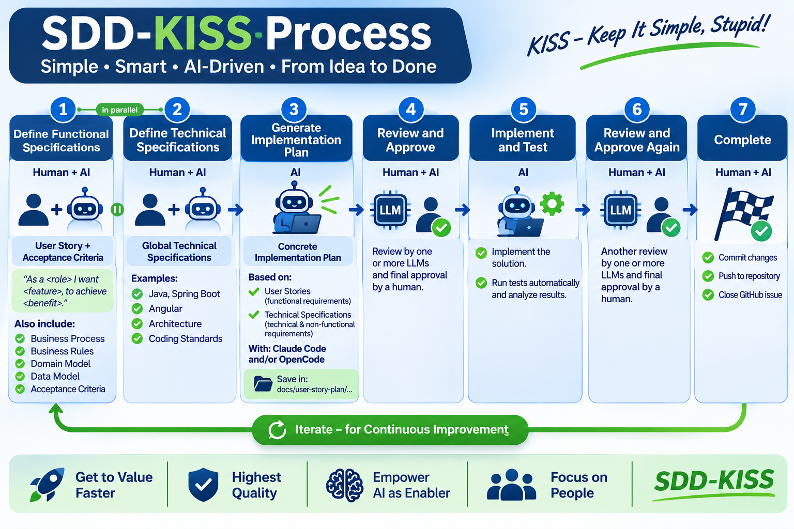

Spec-Driven Development,
the simple way.
Start with a well-thought-out User Story, let AI plan and build, and keep humans in charge of every approval. Seven steps from idea to done — Keep It Simple, Stupid!
Why KISS?
Many developers struggle with SDD because there are so many frameworks to choose from. Each brings its own commands, templates and ceremony.
- AI Unified Process
- GitHub Spec Kit
- OpenSpec
- BMAD
- Get Shit Done
If you are new to SDD, don't start with a framework. Start simple: a clear functional specification, a clear technical specification, an AI agent like Claude Code or OpenCode — and a human who reviews and approves.
The process at a glance
Simple • Smart • AI-Driven • From Idea to Done

Seven steps from idea to done
Humans and AI work side by side. AI does the heavy lifting; humans define the goal and make the final call. Steps 1 and 2 can run in parallel.
-
1Human + AI
Define Functional Specifications
Write a User Story with acceptance criteria in a GitHub Issue: “As a <role> I want <feature>, to achieve <benefit>.” Add business process, business rules, domain model and data model.
-
2Human + AI
Define Technical Specifications
Global technical specifications shared by all stories — e.g. Java, Spring Boot, Angular, architecture and coding standards. Can be done in parallel with step 1.
-
3AI
Generate Implementation Plan
Claude Code and/or OpenCode create a concrete plan based on the user story (functional) and the technical specs (technical & non-functional). Saved in
docs/user-story-plan/… -
4Human + AI
Review and Approve
The plan is reviewed by one or more LLMs and finally approved by a human.
-
5AI
Implement and Test
AI implements the solution, runs the tests automatically and analyses the results.
-
6Human + AI
Review and Approve Again
Another review of the implementation by one or more LLMs, with final approval by a human.
-
7Human + AI
Complete
Commit the changes, push to the repository and close the GitHub Issue.
What you get
Four promises behind SDD-KISS.
Get to Value Faster
No framework to learn first. A good user story is enough to start.
Highest Quality
Two review gates with multiple LLMs, plus automated tests.
Empower AI as Enabler
AI plans, implements and tests — guided by your specifications.
Focus on People
Humans define the goal and give every final approval.
Once the basics feel natural
Master the simple approach first. Then grow it step by step.
Level up
- Make user stories traceable — both new and updated ones.
- Define tests in more detail, especially end-to-end (E2E) tests.
- Keep tests unchanged, so they can reliably check the implementation.
Tips from the community
- Write limits and constraints into the specification (e.g. maximum file size). Only what the spec names gets hardened.
- State explicitly what must not change.
- Keep tests off-limits for the agent, so it can’t edit them until they pass.